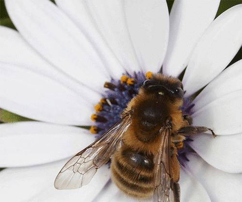
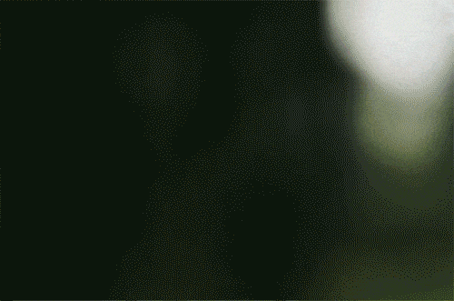

ООО "Пчела Майя" ведёт свою историю с xxxx года. После приобретения земельных участков деревни (х,yz га), долей (паёв) колхоза (xx га), с размеров частного подворья, производящего продукцию на правах личного подсобного хозяйства, компания выросла.Название и юридический статус в его текущем состоянии были обретены после утверждения нового устава на собрании учредителей x.xx.xx.
Менеджмент компании имеет профильное высшее профессиональное (сельскохозяйственное) образование.
Деятельность:
- Собственное производство товаров из мёда, воска и прополиса;
- Собственное производство русского чая;
- Заготовка лекарственных трав и выращивание экзотических;
- Экскурсии и агротуризм.
В числе перспективных планов - реализация дополнительной идеи агротуристического направления.


А именно – организация пляжей, музеев и иных историко-культурных объектов, домов отдыха и лыжного спорта.
Расположение хозяйства на берегу реки, а также холмистый ландшафт, обуславливают дополнительный всесезонный рекреационный потенциал.
Благодаря особому эффекту общения с пчёлами, для гостей пасеки открываются возможности апитерапии.
Рассматриваем предложения предполагаемых партнёров, в т.ч. работающих в непрофильных нам направлениях.